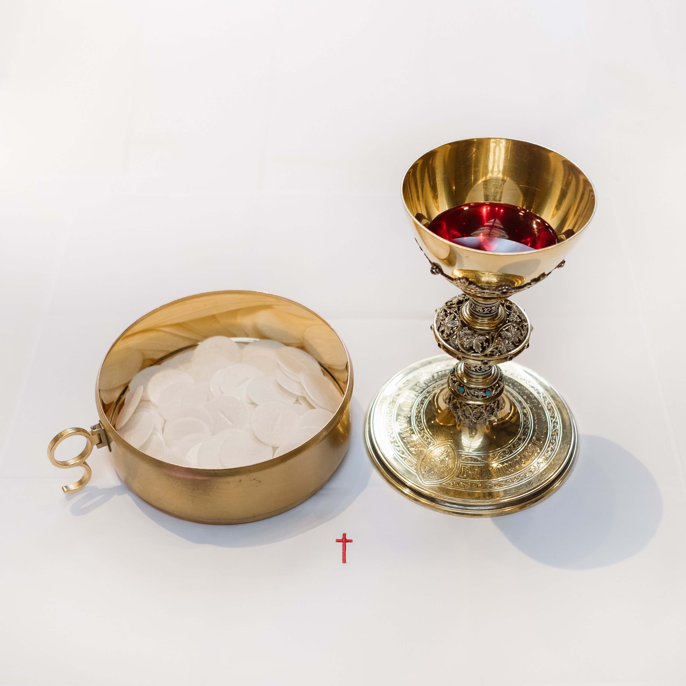

Holy Mass/ Holy Eucharist
Holy Mass did not come out of thin air but has roots in the Word of God. In Exodus 19, God called Israelites to establish a covenant with him, making them His chosen people. As preparation, they had to sanctify themselves. Then the Lord came down on Mount Sinai and then came the Word of God, the ten commandments (Exodus 20). All Israelites answered with one voice that they would do everything the Lord had told them. Then they offered sacrifice and burnt offerings to the Lord. Moses then took the blood of the sacrifice and splashed it on the altar as well as the people saying that it is the blood of the covenant which the Lord has made with them. Then Moses went up with Aaron, Nadab, Abihu, and seventy elders of Israel and they saw God and then they ate and drank (Exodus 24).
In Israel's history, this kind of ritual gathering of God's people could be seen with the same elements: God calling his people together, their sanctification, proclamation of the Word of God, prayer and praise to God, and the sacrificial offering.
In the Holy Mass, we can see the same structure: God calls us together, we repent our sins, give praises to God, the proclamation of the Word of God, and the holy sacrifice (Jesus himself) in which we partake.
God had chosen bread and wine as the material for the Holy Eucharist well before. In Psalms 110: 4, David prophesied that the Lord has sworn to Jesus that "You are a priest forever in the manner of Melchizedek". Melchizedek was the king of Salem and the priest of God Most High who offered sacrifice in the form of bread and wine. (Genesis 14:18).
In the Old Testament, three aspects set the stage for the Holy Eucharist: Manna, Bread of the Presence, and Passover.
Manna
While in the wilderness, when the whole Israel community grumbled against Moses and Aron regarding food, the Lord rained down bread from heaven, Manna in the morning, and quail in the evening twilight every day (except Sabbath) for forty years until the Israelites entered the promised land (Exodus 16). As per Lord's command, they kept some of the Manna in a jar in the Ark of the Covenant so that future generations could see the food the Lord gave them to eat in the wilderness. This Ark of the Covenant was kept in the Tabernacle.
Gathering of Manna - An early renaissance art, 15th century
Manna was not only miraculous but also holy, so it was kept in the Holy of Holies within the tabernacle (Hebrews 9: 4). The Holy Eucharist is also kept in the tabernacle so that we may see and adore Him.
Manna tasted like wafers made with honey. Manna was the foretaste of the promised land, a land flowing with milk and honey. Similarly, Holy Eucharist is the foretaste of heaven (heavenly banquet). Just as Manna was provided as nourishment for Israelites on their journey from Egypt to the promised land, God is providing us Holy Eucharist for our nourishment during our journey from earth to heaven.
Bread of the Presence/ Showbread
In Exodus 25, God gave instructions to Moses on how to build the Tabernacle. Hebrews 9: 2-4 explains that the Tabernacle had the Holy Place as well as the Holy of Holies. The Ark of the Covenant and the gold altar of incense were placed in the Holy of Holies. Menorah (the lampstand), the table, and the Showbread/ Bread of the Presence were in the Holy Place.
The table was covered with gold and had rings fastened to it so that it could be carried with poles. This indicates that it shouldn't be touched. On the table, the Bread of the Presence was always kept before the Lord. The table also had plates and cups as well as pitchers and bowls - all made of pure gold - for pouring libations (drink offering usually wine poured out upon the altar as a part of a sacrificial ceremony).
The table of Showbread by Ben P L, CC BY 2.0, via Wikimedia Commons
.jpg){kind=link}
In Leviticus 24: 5-9, the Lord instructed Moses to place 12 loaves of bread in two piles (six in each pile) on the table and on each sabbath day, to set out the bread before the Lord on behalf of the Israelites by an everlasting covenant. When the old bread was replaced by the new bread on each sabbath, the old one was consumed by the priests. Since it was sacred, only priests could eat it in a sacred place. Some pure frankincense was also put with each pile of bread as an oblation (sacrificial offering) to the Lord.
The bread was always set before the Lord. It was a perpetual offering, a sign of God's continuing presence among his people. Also, Leviticus 24: 1-4 specifies that the lamps set up on the menorah must be burned regularly before the Lord. In Numbers 4: 7-8, when the table was taken out of the tabernacle, the table, as well as the bread, were covered with cloth.
Since only priests could enter the Holy Place, the table and bread of the Presence were hidden from the common people. Three times a year (feasts of Passover, Pentecost, and Tabernacles), when the Israelites made their pilgrimage to Jerusalem Temple, they were shown the table and the bread of the Presence. The priests would take and elevate the Showbread proclaiming "Behold, God's love for you!"
The Hebrew word translated as 'presence' is also translated as 'face' in the Old Testament. Hence Bread of the Presence can also be called Bread of the Face (of God).
In Exodus 24, Moses with Aaron, Nadab, Abihu, and seventy elders of Israel went up the Mount Sinai and participated in a heavenly banquet in which they saw God and ate and drank. Bread of the Presence was a kind of memorial of that heavenly banquet. The tabernacle was the visible sign of the invisible heavenly place of God that Moses saw on Mount Sinai and Bread of the Presence was the visible sign of the invisible Face of God.
To conclude, the Bread of the Presence was sacred and was an unbloody sacrifice offered to God on behalf of the people, a meal for the priests, a sign of the covenant between God and His people, a sign of God's continuing presence among His people and a sign of God's love for His people.
Passover
Passover was not just a meal but also a sacrifice. The Passover was and is on the 14th day of the month of Nisan (the first month of the Jewish calendar) followed by 7 days feast of unleavened bread beginning on Nisan 15th. The instructions that were given in Exodus 12: 1-20 directed the Israelites to observe the Passover at their home. On the 10th of Nisan, every family must procure for itself a one-year-old unblemished male lamb. They must keep it until the 14th and then it would be slaughtered during the evening twilight. Then they must take some of its blood and apply it to the house’s two doorposts and lintel and consume its meat that same night, eating it roasted with unleavened bread and bitter herbs. When the Lord struck down every firstborn in the land and executed judgment on all the gods of Egypt, the blood saved the Israelites from the destructive blow.
In Exodus 12: 25, Moses instructed the Israelites to observe this rite when they enter the promised land. In Deuteronomy 16: 5-7, Moses gave instructions to Israelites to observe the Passover only at the place the Lord would choose as the dwelling place of His name. After the Jerusalem temple was built, the Passover lambs were sacrificed in the temple, and the Passover meal was to be eaten within the city of Jerusalem. 2 Chronicles 30: 1, 14-21 and 2 Chronicles 35:1-19 indicates that kings Hezekiah and Josiah celebrated Passover in Jerusalem.
The Jewish belief was and is that while observing the Passover, they are participating in that historical event. i.e., even though it happened thousands of years ago, they are personally present at that event. Jewish rabbi Gamaliel, mentioned in the Acts of the Apostles wrote "Every man in every generation must consider himself as having been personally delivered from Egypt. Every Israelite must know that he personally has been freed from slavery."
In his Wars of the Jews, Flavius Josephus records that in 4 BC, over 250,000 lambs were sacrificed for Passover. The lambs were sacrificed in the temple on the evening of Nisan 14 within a two-hour time slot (from the ninth to the eleventh hour, or 3:00-5:00 pm). The Jews called the Passover ceremony and the feast of unleavened bread as the feast of Passover. A Jewish day begins not at midnight, but at sunset (6 PM to 6 PM).
Passover sacrifice
On the 10th of Nisan, a one-year-old unblemished male lamb was chosen for the Passover by a member of the household. The lamb would be examined to make sure that it was without blemish. Before Passover, the entire house would be cleaned to remove all the leaven. On the evening of Nisan 14 between 3 PM and 5 PM, the Passover lamb would be sacrificed at the temple.
The Passover lambs were sacrificed in three groups in the courtyard of the Jerusalem temple. The slaughter could be performed by a layman, but the rituals dealing with the blood and fat were to be carried out by a priest. A priest would collect the blood from the lamb in gold or silver cups and would pass the cup to the rows of priests who stood in line from the Temple court to the altar, where the blood was sprinkled. The lamb was then hung up on special hooks or sticks with forearms spread in crucifixion pose and skinned. Then the abdomen was cut open, and the fatty portions intended for the altar were taken out, placed in a vessel, salted, and offered by the priest on the altar, while the remaining entrails were taken out and cleaned. While the lambs were sacrificed, Levites recited the Hallel (Psalms 113-118).
Passover meal
The Passover meal was to be eaten within the city of Jerusalem. The sacrificed lambs were then roasted. No bones might be broken either during cooking or eating. The lamb was set on the table at the evening banquet. The sacrifice had to be consumed entirely that same evening, nothing was allowed to remain overnight. Every participant had to take a piece of lamb at least as large as an olive.
At the time of Jesus, the Passover meal had a well-established order with specific rules and regulations, steps, and stages. The Passover meal was preceded by several hours of fasting beginning at 3:00 PM at the time of the Passover sacrifice. The meal would begin just before nightfall, with the head of the family gathering his household to recline at a large table.
When the guests and family members entered the home to celebrate Passover, their feet would be washed by a servant or slave. All the members would wash their hands before the Passover meal and the table would be set with food and wine. The Passover meal was structured around 4 cups of wine. The head of the family blessed each cup praying "Blessed are you, O Lord our God, King of the universe, who has created the fruit of the vine..." and the four verbs of Exodus 6: 6-7 were recited, one over each cup.
The first cup (cup of sanctification) was poured, blessed and the verb "I am the LORD. I will free you from the burdens of the Egyptians." was recited. The first cup was then drunk. Then they would have bitter herbs with vinegar/ salt water.
Then the second cup (cup of deliverance/ plagues/ judgment) was poured but not drunk. After this, all the food and wine were removed from the table. It was at this time the head of the family explained the story of Exodus to the younger ones, what God has done for Israel. Then all the food and wine were returned to the table. The significance of the Passover lamb, unleavened bread, and bitter herbs was then explained, and Psalms 113-114 were recited. The second cup was blessed and the verb "I will deliver you from their slavery." was recited and then drunk. The hand washing was done for the second time out of respect for the unleavened bread to be eaten. After this, the roasted Passover lamb with vegetables and one unleavened bread was served and prayers over the bread "Blessed are you, O Lord our God, King of the universe, who brings forth bread from the earth..." was said. The bread was then broken and dipped in bitter herbs and eaten along with lamb.
The third cup (cup of redemption/ blessing) was then poured. The second unleavened bread was blessed, broken, and eaten. The third cup was blessed and the verb "I will redeem you by my outstretched arm and with mighty acts of judgment." was recited and drunk.
The fourth cup (cup of praise/ hope/ kingdom/ salvation/ restoration) was then poured, and Psalms 115-118 were recited. After that, the last cup was blessed, the verb "I will take you as my own people, and I will be your God; and you will know that I, the LORD, am your God who has freed you from the burdens of the Egyptians." was recited and then drunk. This completed the Passover meal.
Jesus as the Passover lamb
Jews believed that the ultimate redemption through the Messiah would occur at the Passover. Their picture of Messiah was a political savior who will lead Israel out of the bondage of the nations. Jesus made his entry into Jerusalem on the 10th of Nisan presenting himself as the unblemished Passover lamb to be sacrificed. The people misunderstood Jesus as the political savior and they greeted Him with palm branches and hailed Him as King, shouting "Hosanna," which means "save us." By their acclamations, it was clear that they chose Jesus as their savior. Unwittingly, the people chose Jesus as their Passover lamb on the day the lambs were to be chosen.
The lamb chosen for Passover must be checked for blemishes. The chosen lamb should be perfect, spotless, and unblemished. In the Gospels (Matthew Ch. 21 & 22, Mark Ch. 11 & 12, Luke Ch. 20), when Jesus was teaching at the temple, the chief priests, Pharisees, Sadducees, and elders of the people were asking difficult questions, trying to trap Him in His words. Essentially, they were looking for any blemish which might disqualify him as Messiah. Jesus answered each question soundly, and no one was able to find fault in him which proves that He is without blemish.
Before Passover and the feast of unleavened bread begins, all leaven must be cast out of the homes of the Israelites. Every nook and corner of the house was cleaned, and every trace of leaven was removed. It was during these days that Jesus entered the Jerusalem temple and drove out all who were buying and selling in the temple and overturned the tables of money changers and seats of those who sold doves. In doing so, Jesus kept the command of cleansing the home by cleansing his Father's house.
At the beginning of Nisan 14, Jesus and his disciples celebrated the Passover in the upper room. At Calvary, Jesus was stripped of his garments, hung on the cross and his blood was shed on the altar, the holy cross. Jesus died on the cross at 3:00 PM on the 14th of Nisan, the same time when the sacrifice of the Passover lambs began at the Jerusalem temple and the Levites began their chanting of Hallel. As they chanted, " I was caught by the cords of death (Psalms 116: 3), Dear in the eyes of the LORD is the death of his devoted (Psalms 116: 15), The stone the builders rejected has become the cornerstone (Psalms 118: 22), our Paschal lamb, Christ was sacrificed (1 Cor 5: 7). By his blood, we are saved from the wrath (Rom 5: 9).
Psalms 34: 21 prophesied that none of Jesus’s bones would be broken. It was customary during crucifixion to break the leg bones of the person after a few hours to hasten their death. The only way a person could breathe while hanging on a cross was to push up with his legs. By breaking the legs, death was followed soon by asphyxiation. However, in the case of Jesus, even though they broke the legs of the other two men, they did not break His legs since He was already dead.
On the 16th of Nisan (the feast of first fruits), the Israelites would take some of the grain, the "first fruits" of their harvest to the Temple to offer it to the Lord as thanksgiving. In 1 Cor 15: 20, Paul refers to Jesus Christ who has been raised from the dead, as the first fruits of those who have fallen asleep. Hence Jesus is the fulfillment of God's promise of the resurrection of those who follow the Messiah.
This is the reason why John the Baptist testified "Behold, the Lamb of God, who takes away the sin of the world." (John 1: 29)
Jesus Christ, The Lamb of God by Bestbudbrian, CC BY-SA 4.0, via Wikimedia Commons
{kind=link}
The Last Supper and the Crucifixion
At the last supper, Jesus celebrated the Passover meal. But he transformed it into an event that commemorates the New Covenant. In Luke 22: 7-13, Jesus sent out Peter and John to do preparations for the Passover. Jesus did not reveal the location of the upper room to His disciples because He didn't want Judas to know the location earlier. He didn’t want to get arrested before the institution of the Holy Eucharist. Jesus specified how much he desired to eat that Passover with His disciples in Lk 22:15.

The Last Supper - Photo by MART PRODUCTION
The Last Supper happened at the beginning of Nisan 14. During the supper, Jesus washed the feet of His disciples (John 13: 4-5). In John 13: 14, Jesus encouraged His disciples to wash one another's feet since He, their master and teacher, had done so. It symbolized what he would later do for His people as in Mark 10: 45 ("For the Son of Man did not come to be served but to serve and to give his life as a ransom for many.").
Washing of feet was not just a symbol of love, charity, and humility, but also of the priestly ordination of the apostles. In Leviticus 8: 6, Moses washed Aaron and his sons with water for their priestly ordination. When Peter didn't allow Jesus to wash his feet, Jesus answered him saying “Unless I wash you, you will have no inheritance with me.” (John 13: 8). In Numbers 18: 20, the Lord said to Aaron that "I (the Lord) will be your portion and your heritage among the Israelites." The same Greek word is used for both inheritance and portion in the bible indicating that the priest's inheritance is the Lord. Hence, by washing His disciples' feet, Jesus established the priesthood so that the priests could celebrate his holy sacrifice, which He asked the disciples to do "Do this in memory of me.” (Luke 22: 19).
In the details about the Last Supper in the Gospels (Matthew 26: 26-30, Mark 14: 22-26, Luke 22: 14-20), it had some of the features of the Passover meal: blessing, and breaking of the unleavened bread, blessing, and distribution of cups of wine, and the chanting of Psalms. But there was one notable absence, the Passover lamb. Instead, Jesus offered himself as the Passover lamb to be consumed under the appearance of bread and wine.
Jesus himself said "This is my body" (Matthew 26: 26) while giving the bread and "This is my blood of the covenant, which will be shed on behalf of many for the forgiveness of sins." (Matthew 26: 28) while distributing wine to His disciples. Here Jesus is replacing the old covenant God made with His people at Mount Sinai with the New Covenant, and it is ratified with His blood. Just as Moses sprinkled the blood of the old covenant on the altar and the people, Jesus shed his blood on the altar, the holy cross, and is giving His blood for His people to drink. Hence, we can say that the consecrated wine is not just a symbol of Jesus's blood but His blood itself. Likewise, the consecrated bread is not just a symbol of His flesh, but His flesh itself. Like the Israelites who renewed the covenant with God (under Josiah, Ezra), each holy communion is a renewal of the new covenant with God.
The two cups of wine specified in Luke 22: 14-20 were the second and the third cup of the Passover meal. It is the third cup, the cup of blessing/ redemption Jesus said that it is His blood. This is what St. Paul said, "The cup of blessing that we bless, is it not a participation in the blood of Christ? The bread that we break, is it not a participation in the body of Christ?" (1 Corinthians 10: 16).
After distributing the third cup, His blood to the disciples, Jesus said "Amen, I say to you, I shall not drink again the fruit of the vine until the day when I drink it new in the kingdom of God." (Mark 14: 25). After that, they recited Psalms 115-118 and then went to Mount of Olives (Mark 14: 26). This means that Jesus didn't have the fourth cup of the Passover meal which indicates that Jesus didn't complete the Passover meal in the upper room. The explanation about the fourth cup is not formally or explicitly taught by Catholic Church but follows from the church’s teaching.
At the garden of Gethsemane located at the base of the Mount of Olives, Jesus prayed three times "My Father, if it is possible, let this cup pass from me; yet, not as I will, but as you will." (Matthew 26: 36-46). Here Jesus is referring to the fourth cup which he didn't have at the Passover meal in the upper room. At Calvary, before crucifying Jesus, they gave wine to Jesus to drink. But He refused to drink that wine (Matthew 27: 33-34) because his mission was not yet accomplished. But in John 19: 28-30, when Jesus became aware that everything was finished, He said "I thirst". Then they put a sponge soaked in wine on a sprig of hyssop and put it up to His mouth. When Jesus had taken the wine, he said, "It is finished" and bowing His head, He handed over the spirit. What is finished? The Last Supper. Jesus had his fourth cup (cup of praise/ hope/ kingdom/ salvation/ restoration) on the cross just before His death. Thus, by delaying the fourth cup until he dies, Jesus united His passion and death to the Last Supper. Hence Jesus's passion and death became the Passover sacrifice, and the Last Supper became the Passover meal where the Passover lamb, Jesus is consumed.
Blood and Water from Jesus' side by JuliansPublicUsername, CC BY-SA 4.0, via Wikimedia Commons
{kind=link}
The Jews believe that while observing the Passover, they are participating in that historical event. i.e., even though it happened thousands of years ago, they are personally present at that event. Similarly, Holy Mass is not just a memorial of Christ's passion, death, and resurrection but we are participating personally in those events even though it happened two thousand years ago.
Bread of Life
In John chapter 6, it was around the feast of Passover, Jesus performed the sign of the multiplication of the loaves (John 6: 1-15). Here Jesus took the loaves, gave thanks, and distributed them to those who followed Him. When everyone had their fill, His disciples collected the remaining fragments in twelve wicker baskets indicating that there was more than enough food to feed all the people who followed Him. When the people saw Jesus multiplying the loaves, they were reminded of Manna that the Lord provided when Moses called upon the Lord. The Jews were familiar with these words of Moses, "A prophet like me will the LORD, your God, raise up for you from among your own kindred; that is the one to whom you shall listen." (Deuteronomy 18: 15). So, the people said to themselves "This is truly the Prophet, the one who is to come into the world." (John 6: 14).
The same evening, Jesus performed the sign of walking on the water (John 6: 16-21). Here, Jesus was walking on the sea and when the disciples got afraid, He said "It is I. Do not be afraid." Also, the boat that the disciples were in immediately arrived at the shore. Seeing this, the disciples might be reminded of Moses who parted the red sea so that the people could walk over the dry land. But here Jesus, instead of parting the water, walked over the water and transported them immediately to the shore. Also, "I AM" is the word used by God when He revealed Himself to Moses. Hence, this sign shows Jesus's control over nature and His divinity.
In the above two signs, Jesus did miracles on the bread as well as His body. The multiplication of the loaves prefigures the superabundance of the Holy Eucharist to all who follow Jesus. Thinking about walking on water, Jesus without any change in His external appearance did a miracle inside His body so that His body didn't sink while walking on the water (For nothing will be impossible for God - Luke 1: 37). Think about transubstantiation. Even though the consecrated bread and wine appear as bread and wine, the inner substance changes to the body and blood of Jesus Christ. The above two signs bear witnesses for the bread of life discourse.
Bread and Wine - A photo by Josh Applegate on Unsplash
The next day, while teaching in the synagogue in Capernaum, Jesus said "I am the living bread that came down from heaven; whoever eats this bread will live forever; and the bread that I will give is my flesh for the life of the world." (John 6: 51).
Some people argue that in the above passage, Jesus used metaphor. They say that bread and wine are just symbols of His body and blood. But that is not right. Whenever Jesus used metaphors, He made sure that the audience understood them. Whenever they had a confusion, He clarified their doubt. For example, in John 3: 3-5, when Jesus said that no one can see the kingdom of God without being born again, Nicodemus got confused. Then Jesus clarified his confusion saying no one can enter the kingdom of God without being born of water and Spirit. Similarly, in Matthew 16: 5-12, when Jesus warned the disciples about the leaven of the Pharisees and Sadducees, they misunderstood that Jesus said so because they didn't bring bread with them. Then Jesus cleared their misunderstanding by saying that He didn't talk about the leaven of bread but about the leaven (teaching) of Pharisees and Sadducees.
Jesus was not speaking metaphorically when He said that the bread is His flesh. Because when the Jews quarreled among themselves saying "How can this man give us [his] flesh to eat?" (John 6: 52), Jesus re-emphasized what he said using stronger words "Amen, amen, I say to you, unless you eat the flesh of the Son of Man and drink his blood, you do not have life within you. Whoever eats my flesh and drinks my blood has eternal life, and I will raise him on the last day. For my flesh is true food, and my blood is true drink. Whoever eats my flesh and drinks my blood remains in me and I in him." (John 6: 53-56). In the above passage, instead of using the Greek word phago (eat), Jesus used a more intense word trogo (gnaw/ chew) to make them understand that he literally wanted them to eat His flesh and drink His blood. The word trogo is never used metaphorically in Greek.
The people literally understood that Jesus was telling them to eat His flesh and drink His blood. Mosaic law forbids the drinking of blood. So many of His followers couldn't accept this teaching and they left him (John 6: 66). But Jesus didn't call them back. Instead, he asked the disciples whether they also would like to leave. If Jesus was speaking metaphorically, He would have clarified His teaching and wouldn't have allowed His followers to leave Him. But that didn't happen. Jesus didn't want to make any compromise in this teaching.
Eucharistic Miracle of Lanciano, Italy in 8th Century A.D. by AFC photo, CC BY-SA 3.0, via Wikimedia Commons
{kind=link}
To conclude, communion with the Body and Blood of Christ increases the communicant's union with the Lord, forgives his venial sins, and preserves him from grave sins. Since receiving this sacrament strengthens the bonds of charity between the communicant and Christ, it also reinforces the unity of the Church as the Mystical Body of Christ (CCC 1416). What we can do is attend the Holy Mass and consume His body and blood worthily as often as we can.
“For as often as you eat this bread and drink the cup, you proclaim the death of the Lord until he comes. Therefore whoever eats the bread or drinks the cup of the Lord unworthily will have to answer for the body and blood of the Lord. A person should examine himself, and so eat the bread and drink the cup. For anyone who eats and drinks without discerning the body, eats and drinks judgment on himself. That is why many among you are ill and infirm, and a considerable number are dying. If we discerned ourselves, we would not be under judgment; but since we are judged by [the] Lord, we are being disciplined so that we may not be condemned along with the world.” (1 Cor 11: 26-32)
References:
1. Holy Bible
2. Catechism of the Catholic Church
4. Bible.org - Passover in the Time of Jesus
5. Holy Trinity Parish - Foot Washing and the Priesthood
6. Catholic Answers - The Institution of the Mass
7. Catholic Exchange - Interpreting John 6: Jesus, Moses, and the Eucharist
8. Mass Explained - Bread of Life discourse
9. Bible Tools - What the Bible says about Passover Kept at the Temple
10. Sar Shalom Messianic Community - The Passover Lamb
11. Jewish Encyclopedia - Passover Sacrifice
12. Wikipedia - Passover Sacrifice
13. Fr. Daniel Poovannathil's Youtube video on Last Supper, Jesus' Passion and Death